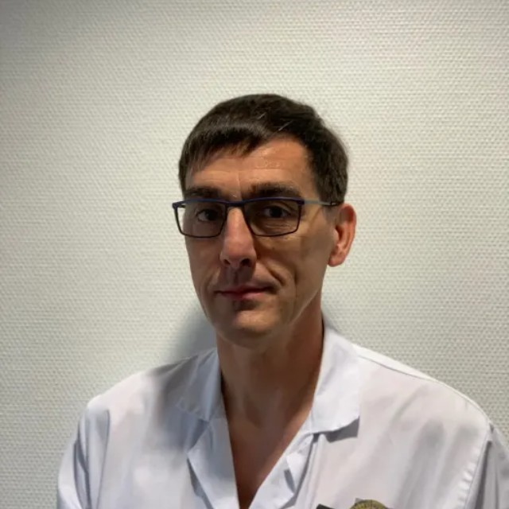

Épaule
Conflit sous-acromial, rupture de la coiffe des rotateurs, instabilité et luxation, arthrose (arthroplastie).
Chirurgie orthopédique & traumatologique
Le Dr Pascal Clappaz, chirurgien orthopédiste et traumatologue à Bourg-en-Bresse, prend en charge les pathologies et traumatismes du membre supérieur — épaule, coude, main et poignet — au sein de la Clinique Convert.

Dr Pascal Clappaz
Chirurgien orthopédiste
& traumatologue
Présentation
Le Dr Pascal Clappaz est chirurgien orthopédiste et traumatologue à la Clinique Convert de Bourg-en-Bresse depuis 2006. Formé au CHU de Besançon, où il a exercé comme chef de clinique assistant puis praticien hospitalier, il a orienté sa pratique vers la chirurgie du membre supérieur : l'épaule, le coude, la main et le poignet, ainsi que la traumatologie.
Titulaire de diplômes universitaires en pathologie de l'épaule et du coude, en chirurgie de la main et en techniques microchirurgicales, il est membre titulaire des principales sociétés savantes françaises de la spécialité (SOFCOT, SOFEC, SFCM).
Chaque consultation vise un diagnostic précis et une prise en charge adaptée, médicale ou chirurgicale, dans un objectif clair : soulager la douleur, restaurer la fonction et vous permettre de reprendre vos activités.
Voir le parcours et les diplômesParcours & titres
Diplômé et formé au CHU de Besançon, le Dr Clappaz a construit une expertise ciblée sur le membre supérieur, reconnue par les sociétés savantes de la spécialité.
Membre titulaire des sociétés savantes
Domaines d'expertise
De la consultation au suivi post-opératoire, les pathologies traitées couvrent l'ensemble du membre supérieur, en chirurgie réglée comme en traumatologie.
Conflit sous-acromial, rupture de la coiffe des rotateurs, instabilité et luxation, arthrose (arthroplastie).
Épicondylite (« tennis elbow »), compression du nerf ulnaire, raideur et séquelles de traumatismes.
Syndrome du canal carpien, maladie de Dupuytren, doigt à ressaut, arthrose (rhizarthrose), kystes.
Fractures, entorses et luxations, plaies de la main, prise en charge des urgences orthopédiques.
Techniques arthroscopiques et gestes ciblés lorsqu'ils sont indiqués, pour une récupération facilitée.
Consultation d'évaluation, orientation thérapeutique et second avis avant décision opératoire.
Liste non exhaustive et fournie à titre informatif. Seule une consultation permet d'établir un diagnostic et de proposer une prise en charge adaptée à votre situation.
Votre parcours de soin
Écoute de votre motif, examen clinique et analyse de vos examens d'imagerie pour poser un diagnostic précis.
Explication des options — médicales, rééducatives ou chirurgicales — avec leurs bénéfices et leurs risques.
Si la chirurgie est retenue, elle est organisée à la Clinique Convert dans un cadre technique adapté.
Consultations de contrôle et coordination avec la rééducation pour optimiser votre récupération.
Informations pratiques
Prenez rendez-vous en ligne à tout moment, ou contactez le secrétariat de la Clinique Convert pendant les heures d'ouverture.
En cas d'urgence vitale, composez le 15 (SAMU) ou le 112.